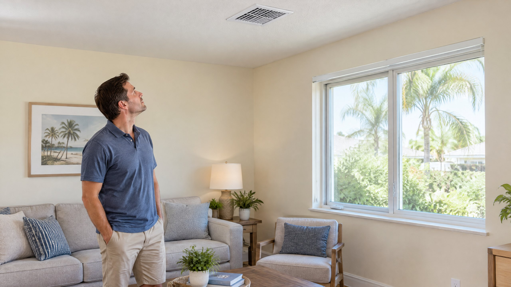

The outdoor AC cabinet can make it seem as though your home receives outdoor air whenever cooling runs. For a typical residential split system, that is not how the equipment works. Cooling air, moving air, filtering air, and replacing indoor air are different jobs.
The useful question for a Tampa or North Tampa homeowner is whether the installed system has an intentional outdoor-air path. Do not assume it does because the AC has an outdoor unit, or assume it does not because the home uses ordinary ceiling registers. The actual ventilation equipment and controls determine the answer.
Does a typical central AC supply outdoor air?
Most residential central AC systems recirculate indoor air rather than mechanically supplying outdoor air. EPA says most home heating and cooling systems do not bring fresh air into the house mechanically. Indoor return air is cooled and sent back through supply ducts. A dedicated outdoor-air intake or ventilation system can change that arrangement.[1]
That does not mean a house has no outdoor-air exchange. EPA identifies open windows and doors, leaks in the building enclosure, and mechanical ventilation as different ways air enters and leaves. Uncontrolled leakage is not the same as a documented, controlled ventilation system, and an ordinary return grille is not proof of an outdoor-air intake.[1]
Why is there an outdoor unit if it does not send outdoor air indoors?
The outdoor unit releases heat removed from indoor air. In a conventional split AC, refrigerant carries that heat between the indoor coil and outdoor equipment; the connecting refrigerant tubes are not fresh-air ducts. Carrier describes indoor air moving across the evaporator coil while the outdoor condenser releases the heat absorbed from the home.[2]
The indoor blower moves household air through the indoor coil and duct system. The outdoor condenser fan moves outdoor air across the outdoor coil. These are separate air paths in an ordinary split-system installation. Heat transfer between indoors and outdoors is not the same as exchanging the air people breathe inside.
| Function | What it does | What it does not establish |
|---|---|---|
| Cooling | Removes heat from indoor air. | That outdoor air is being delivered. |
| Circulation | Moves air through the home and equipment. | That indoor air is being replaced. |
| Filtration | Captures particles according to the filter and airflow. | An outdoor-air path or removal of every gas. |
| Ventilation | Brings outdoor air in and moves indoor air out. | That cooling or moisture control is automatically adequate. |
Does setting the thermostat fan to On bring in fresh air?
Longer blower operation does not create an outdoor-air connection that is not installed. If the system only recirculates indoor air, changing the fan setting changes circulation, not the air's source. A home with a dedicated intake or ventilation controller may use blower operation as part of its design, so check those controls rather than applying one rule to every installation.
EPA separates mechanical outdoor-air intakes from ordinary heating and cooling systems. Before running the blower continuously to freshen a room, confirm whether there is such an intake and what controls it.[1] Our Auto versus On fan-setting explanation covers the separate circulation and humidity decision without treating fan mode as ventilation.
Does a better filter replace the need for ventilation?
No. A filter can remove some particles from air passing through it, but it does not create an outdoor-air supply. EPA identifies source control, improved ventilation, and air cleaning or filtration as separate approaches. It also notes that air cleaners generally are not designed to remove gaseous pollutants.[3]
If you are considering air purifier installation, first clarify which problem the equipment is intended to address. Particle filtration is not proof that indoor air is being replaced, and no filter should be described as solving every air-quality concern. Read our AC filter selection guide for fit and airflow compatibility rather than choosing a restrictive filter to compensate for an unidentified ventilation issue.
Should you open windows while the AC runs in Tampa?
Opening a window can bring outdoor air inside, but the outdoor conditions matter. EPA says natural ventilation depends on weather and recommends evaluating outdoor pollution sources before using ventilation to reduce indoor pollutants. Opening windows during smoke or other poor outdoor-air conditions is not an automatic improvement.[3]
On a warm, humid Tampa day, incoming air can also add a cooling and moisture-removal load. HVI explains that simple supply and exhaust ventilation do not themselves temper incoming air or remove its moisture. A controlled system can account for the home and climate; leaving a window open is not equivalent to that design.[4]
This is not an instruction to eliminate ventilation or seal every opening without a plan. It is a reason to identify the installed arrangement and consider weather, outdoor air quality, humidity, and equipment operation together. Cooling comfort alone does not confirm how much outdoor air a home receives.
How can you find out whether your home has an outdoor-air intake?
Check existing equipment paperwork and ask the provider to identify any ventilation controller, intake, or energy-recovery equipment. Request a clear explanation of where air enters, where it leaves, when the system operates, and how incoming air is handled. Do not identify an intake by guessing from a grille's appearance or by opening equipment panels.
HVI describes supply, exhaust, balanced, and energy-recovery ventilation arrangements. An energy recovery ventilator can transfer some heat and water vapor between air streams, but it is not a universal fix or a guarantee of humidity control. The design needs to match the home rather than just a product label.[4]
Do not attach an improvised outdoor-air duct, alter dampers, or close a known intake without equipment-specific guidance. If the immediate issue is declining cooling, new equipment noise, or unresolved airflow, request an AC repair assessment. A stuffy feeling by itself does not diagnose a broken AC or establish that a particular ventilation accessory is needed.
Frequently Asked Questions
Does the outdoor condenser fan blow fresh air into the house?
Not in a conventional residential split AC. It moves outdoor air over the outdoor coil to release heat. The indoor blower moves indoor air through a separate path; any outdoor-air intake must be identified separately.
Can a central AC system have a fresh-air intake?
Yes. A dedicated outdoor-air intake or mechanical ventilation system can be integrated with HVAC equipment. Check the installed design and controls rather than assuming every central AC either includes or excludes that feature.
Does a closed window mean no outdoor air enters my home?
No. Outdoor air can also enter through building leaks or intentional mechanical ventilation. A closed window does not establish either zero air exchange or an adequate controlled ventilation rate.
Is a stuffy room proof that the AC needs replacement?
No. A stuffy feeling is not a specific equipment diagnosis. Ask about the existing air paths, ventilation controls, indoor sources, and cooling performance before deciding that a replacement or added accessory is the answer.
Sources
[1] U.S. Environmental Protection Agency: How does outdoor air enter a building? Most residential heating/cooling systems and the separate natural, leakage, and mechanical outdoor-air paths.
[2] Carrier: How Do Air Conditioners Work?. Separate indoor/outdoor air paths and refrigerant heat transfer; general principles, not equipment-specific instructions.
[3] U.S. Environmental Protection Agency: Improving Indoor Air Quality. Distinct source control, ventilation, and filtration approaches; weather and outdoor-pollutant considerations.
[4] Home Ventilating Institute: Mechanical Ventilation Types. Intentional ventilation arrangements and incoming-air heat/moisture considerations.
Editorial Source Review & Publisher
Prepared for On The Way Heating & Air from the federal, manufacturer, and technical references above. This general explanation is not an inspection of your equipment, a ventilation measurement, or a health assessment. Your installed equipment and controls should determine the answer for your home.